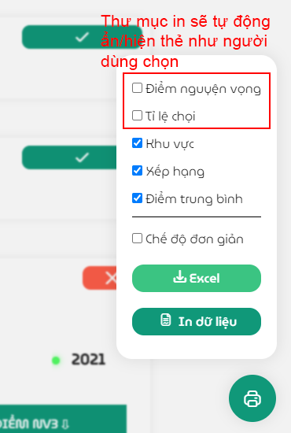
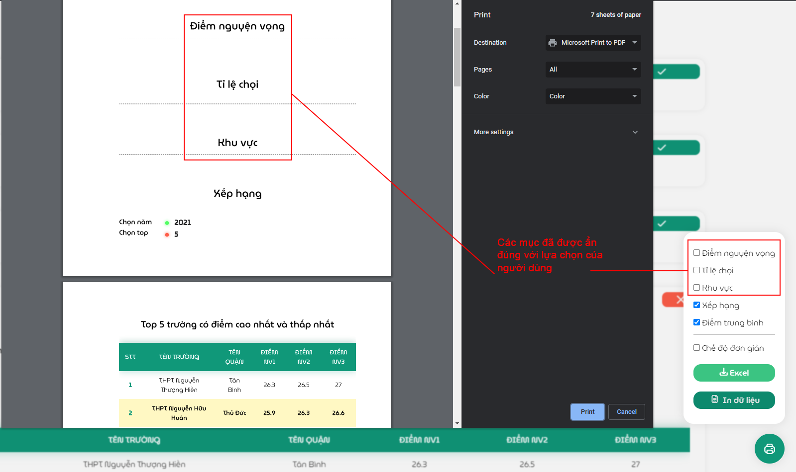

Các chức năng cơ bản ¶
- Báo cáo là trang với mục đích chủ yếu là đem tất cả số liệu của một trường về một nơi để xuất dữ liệu (hoặc in) nhằm đáp ứng nhu cầu lưu trữ tài liệu để nghiên cứu kĩ hơn.
- Vì là phần Báo cáo nên giao diện của trang khá giống với các trang trước đó như Tra cứu, Lọc điểm, đặc biệt là Phân tích.
- Đồng thời, các chức năng đã được nêu trước đó như Thay đổi dãy năm (thường được hiển thị trên đầu mỗi thẻ), Thay đổi dạng biều đồ (nút ở đầu thẻ) hoặc chọn khu vực đều được sử dụng lại.
Ẩn/Hiện thẻ ¶
Người dùng có thể tuỳ chọn ẩn/hiện thẻ của từng mục bằng các ấn vào nút ở góc phía trên bên phải để thu gọn thẻ đó.


Ngoài ra, để cho việc hiển thị trên trang web và khi in được đồng bộ hoá, hệ thống sẽ nhớ những thẻ nào mà người dùng ẩn đi và sẽ không in thẻ đó.
 